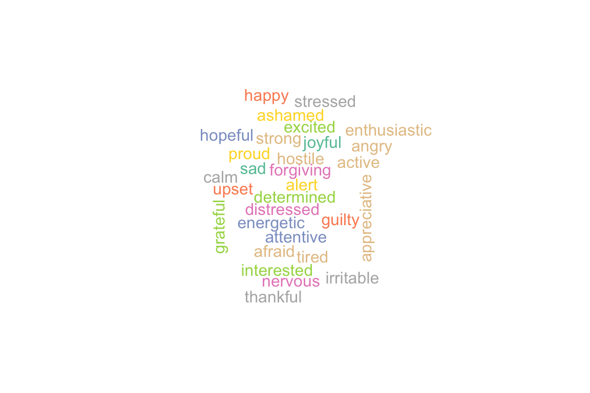
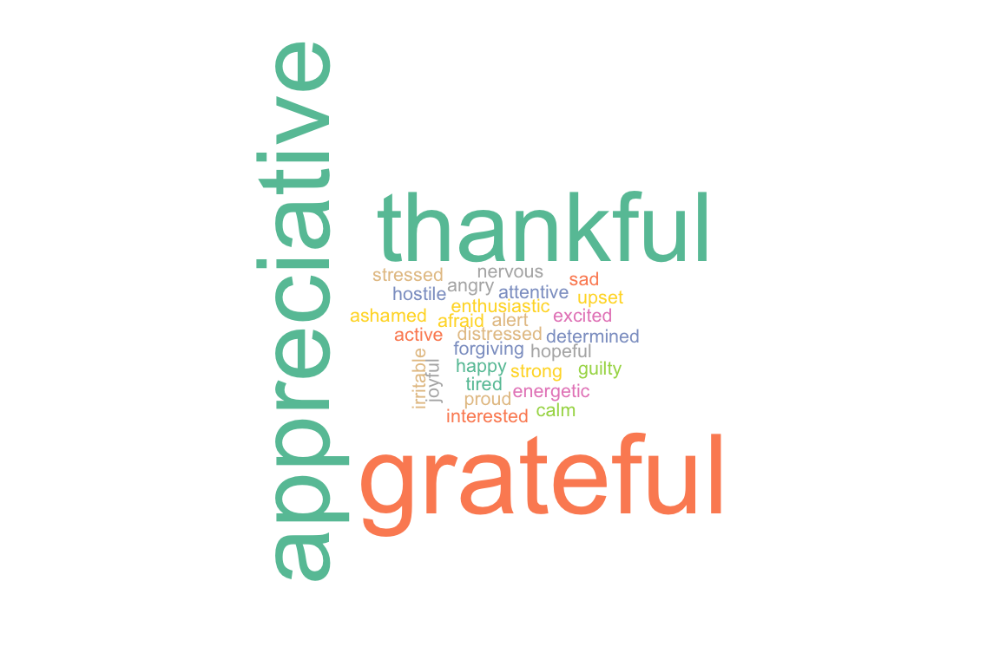
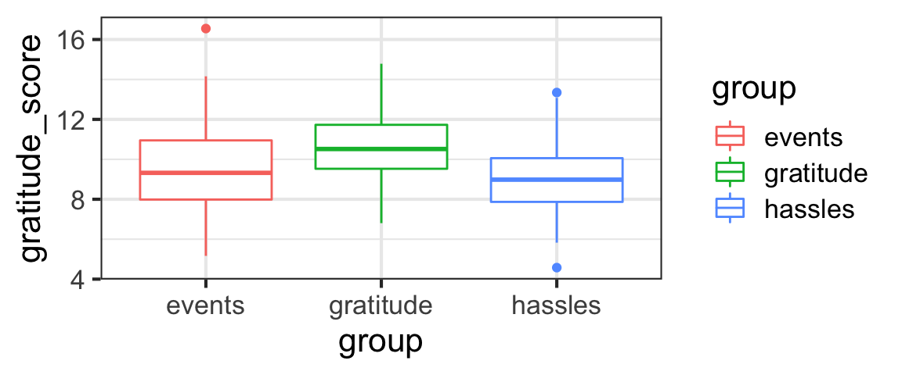
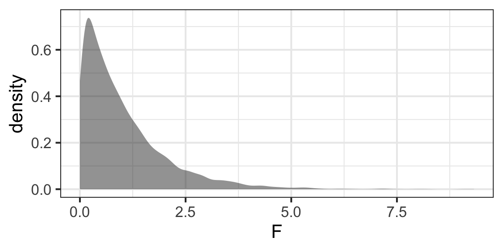

Learning Outcomes
This module introduces Analysis of Variance (ANOVA), which allows us to test whether the means of three or more groups are all equal. (Like a two-sample t-test for more than two groups).
By the end of the module you will:
- Be able to compute SSG, MSG, SSE, MSE, and the F-ratio, then use the result to find the p-value for an ANOVA
- Be able to explain (graphically or verbally) what all the quantities listed above are measuring
- Use
car::Anova(lm())to carry out an ANOVA in R - Use
TukeyHSD()in R to determine which group means are different, if an ANOVA has allowed you to reject the null hypothesis that they are all the same - Be able to list the conditions under which ANOVA is reliable and appropriate, and check them in a specific scenario
Text book reference: IMS Chapter 7.5
Case Study: Gratitude
A growing body of research has documented the effects that practicing gratitude can have on people – providing not just spiritual and mental-health benefits, but also improving physical health.
Dataset
We will dive further into this topic – learning about ANOVA along the way – via a case study where researchers tried to collect data to answer:
“How does gratitude affect peoples’ mental and physical well-being?”
The data are simulated based on the results of a paper published in 2003:

Click on the image above to get the full PDF. Reading it is not required, but it is interesting and accessible - check it out if you have free time!
Can We Induce Gratitude?
To understand whether gratitude can cause improvements in mental and physical health and practices, the researchers needed to do a randomized study, in which they somehow controlled peoples’ gratitude levels. How did they do that?
First, they recruited nearly 200 college students to participate in their study.
They asked participants to complete a weekly journal, writing lists of things that they were grateful for. 1/3 of study participants were randomly assigned to this group - the gratitude group.
Other participants were asked to write about things that annoyed them instead – this was the hassles group.
Finally, a control group – the events group – just wrote about events in the past week that had affected them (could be either positive or negative).
Before delving into any other questions, the researchers had to verify that the gratitude group actually felt more grateful than the other groups…
More Design Details
In addition to the journals, all the students had to complete weekly surveys about their behavior and state of mind.
For example, they had to state how often (on a scale of 1 to 5) they experienced each of a set of feelings over the preceding week:

Pulling out Gratitude
The researchers combined scores from the words thankful, appreciative, and grateful to assess participants’ gratitude. In our dataset, this value is called gratitude_score.

The Data
How do the data actually look?
gf_boxplot(gratitude_score ~ group, data = grateful, color = ~group)
It seems like perhaps the gratitude_score is higher for the gratitude group and lower for the others, but we really need hypothesis test results to have more confidence in our judgment of whether the difference is real or if the differences between groups could just be the result of random sampling variation.
Our Question
As Emmons and McCullough did, our first job will be to test whether the mean gratitude_score is the same for all three groups in the study – the gratitude group, the hassles group, and the events group.
This is different from the t-tests we did for comparing means before, because in the t-tests, we compared two and only two groups.
Now, we have more than two groups to compare. (Three, here.)
Hypotheses for ANOVA
We want to test:
\[H_0: \mu_{gratitude} = \mu_{events} = \mu_{hassles}\]
In other words, our null hypothesis is that the means of all groups are the same. (The \(\mu\)s are the true population means for each of the groups.)
The alternate hypothesis is that at least one pair of groups has different means. (There are a lot of different ways for that to be the case, so for ANOVA, often we just write \(H_A\) in words rather than notation).
Test Stat for ANOVA: F-ratio
The big challenge here is to come up with a test statistic – one number that measures evidence against the null hypothesis that all the group means are the same.
How can we define a good test statistic to measure how different more than two numbers are?
The video below will walk through the derivation of the F-ratio statistic. I recommend that you download or print a worksheet where you can take notes and summarize the material from this video (and other key parts of the tutorial). Writing and drawing it yourself can make it easier to understand and remember!
Sampling Distribution of F
All right, we can compute the F-ratio now.
But what is its sampling distribution? We’ve hypothesized that it will probably be right-skewed, since it can never be less than 0.
A Simulation
So, we know that a large value of F will let us reject the null. But how big is “large”?
We need to know the sampling distribution of F (when \(H_0\) is true) in order to judge.
Let’s consider a simulation tailored to the case study we’re currently investigating.
Plan of Attack for Simulation
- We will simulate datasets with \(n =\) 196 and three groups
- In our simulations, \(H_0\) is true, so all the groups actually have the same mean (let’s make it 10).
- We’ll draw simulated data points from a \(N(10,2)\) distribution
- We will allocate them randomly to the three groups
- For each simulated sample, we will compute \(F\)
- When we have many values of \(F\) for many simulated datasets, we can plot the sampling distribution of \(F\) under the null hypothesis and see what it looks like.
Simulation Code/Results
If you are interested in details of how the simulation is coded, you’re welcome to check it out (but it’s hidden because you will not be asked to re-create something like this yourself).
Show code
n_sim <- 5000
n <- nrow(grateful)
F <- numeric(length = n_sim)
for(i in c(1:n_sim)){
sim_data <- data.frame(gratitude_score =
rnorm(n, mean = 10, sd = 2),
group = grateful$group)
group_means <- mean(~gratitude_score | group,
data = sim_data)
sim_data <- sim_data %>%
mutate(overall_mean = mean(~gratitude_score,
data = sim_data),
group_mean = group_means[group])
F[i] <- sum(~ ((group_mean - overall_mean)^2),
data = sim_data) / (3 - 1) /
( sum(~ (gratitude_score - group_mean)^2,
data = sim_data) / (nrow(sim_data) - 3) )
}
gf_density(~F)
F-ratio has F Distribution
- It looks how we expected!
- But…what PDF looks like that???
- Thanks to analysis done by statisticians who have come before us and done plenty of math, we know that this statistic has an F distribution with \(df1 = (K-1)\) and \(df2 = (n - K)\) degrees of freedom (the black line is the F distribution):
gf_density(~F) %>%
gf_dist(dist = 'f',
params = c(df1 = 2, df2 = (nrow(grateful) - 3))) You may notice there’s a little mismatch between the simulated sampling distribution and the theoretical F distribution for very small F-values, but…where it counts, in the right tail, the match is very good. So our p-value estimates should be pretty good using this distribution (and for the record, you won’t see this issue so much with \(K > 3\) - that is, when there are more groups under comparison)
P-value!
To get the p-value of our test, we just need to find the probability of getting an \(F\) stat at least as big as ours, in a \(F_{2, 193}\) distribution:
pf(11.15, df1 = 2, df2 = 193, lower.tail = FALSE)## [1] 2.61536e-05This is very small, so we reject \(H_0\): at least one of the pairs of groups in the study had different gratitude_scores.
Side note about sided-ness: since the F statistic is a ratio of sums of squares, it gets bigger and bigger as differences in means between any groups grow (no matter which mean(s) are bigger/smaller than the others). So there is no need to look at “both sides” of the F-distribution or multiply our pf() value by 2; ANOVA is always a 2-sided test. And it is always computed from the “upper” tail only of the F distribution (so we always use lower.tail = FALSE).
Letting R do all the work (Recap)
This section is labelled “Recap” as it is the one you may want to come back to as a summary/reference.
Of course, we won’t do all the calculations by hand each time; there’s an R function to automate it all.
We use car::Anova().
Note: You may see others using anova() or aov(). In the simple case we are considering here, they should all work the same. But in more complicated situations – using ANOVA with multiple regression models or with more than one grouping variable - car::Anova() works and the others can mislead. So we choose this more flexible option.
The syntax is a little odd. car::Anova() takes as input a fitted regression model from lm(), with the variable you want the mean of as the response and the group variable as the predictor.
You could do something like:
my_model <- lm(quantitative_variable_I_want_the_mean_of ~ variable_that_gives_groups,
data = my_dataset)
car::Anova(my_model)Or, putting it all into one line since we don’t really need the fitted lm() object for anything:
my_model <- lm(quantitative_variable_I_want_the_mean_of ~ variable_that_gives_groups,
data = my_dataset)
car::Anova(my_model)Your Turn
See if you can write the code to run an ANOVA for our gratitude example. Recall, the dataset is called grateful and we want to test whether the mean gratitude_score is the same for the different groups.
car::Anova()car::Anova(lm())car::Anova(lm(... ~ ..., data = ...))car::Anova(lm(... ~ ..., data = grateful))car::Anova(lm(gratitude_score ~ ..., data = grateful))car::Anova(lm(gratitude_score ~ group, data = grateful))Well done! Now, let’s examine the output.
Notice – all the quantities that we used in our derivation of the F-statistic are right there in the ANOVA output table! (The numeric values also all match with the ones we’ve previously computed by hand.)
- The “group” row gives the \(SSG\) and its \(df\) (from which we can get \(MSG\)) and then the \(F\) stat and p-value)
- The “Residuals” row gives the \(SSE\) and its \(df\) (from which we can get \(MSE\)). (Residuals is another statistical term for errors.)
- The
Sum Sqcolumn corresponds to \(SS\) terms - \(MS\) terms are not shown in the table, but can be computed from the \(SS\) terms and the degrees of freedom
- The
F valueis the F-ratio (test statistic) - The
Pr(>F)is the p-value of the test
(A classic text book ANOVA problem – or, ahem, a quiz problem – is to give you a partially-filled-in ANOVA results table, and ask you to fill in the missing values.)
Pairwise Comparisons
Whaddaya wanna know NOW?
- If we do reject \(H_0\), like we do here, the test just tells us that at least one pair of means is different.
- So here, is the
gratitudedifferent fromhassles? What about the control,events– is eithergratitudeorhasslesdifferent from that? - With the ANOVA test, we don’t know which pairs are different
- BUT if we fail to reject \(H_0\), then we know they are all the same - case closed.
- If we want to make pairwise comparisons, we need more tests.
Maybe a LOT more tests…
- Here, with three groups, we have just three pairs of means to compare
- With more groups, it would be a lot worse.
- We want to avoid problems with multiple comparisons! Remember the jelly beans?

Pairwise tests corrected for multiple tests
What if we could do a 2-sample t-test for each pair, but inflate the p-value of each test a little to make up for the number of tests being done?
(Well, that’d be great.)
Tukey’s pairwise Honest Significant Difference test (TukeyHSD()) in R does this for us.
Note: Why the name Tukey? It was one of many contributions by John Tukey to statistics (and math and computer science)
We only carry out the TukeyHSD() test after an ANOVA rejects \(H_0\) and indicates that at least one pair has different means. This restraint – not doing pairwise tests unless we already have evidence there will be at least one pair that are significantly different (plus the Tukey HSD adjustment-of-the-p-values) – helps us avoid Type I errors.
Coding the test in R is simple. The input is the same fitted lm() object you already used for the car::Anova(). You can also specify a conf.level (confidence level) if you want something other than the default 95% confidence.
TukeyHSD(lm(gratitude_score ~ group, data = grateful),
conf.level = 0.95)## Tukey multiple comparisons of means
## 95% family-wise confidence level
##
## Fit: aov(formula = x)
##
## $group
## diff lwr upr p adj
## gratitude-events 1.1095887 0.3137355 1.9054420 0.0033649
## hassles-events -0.4280003 -1.2208332 0.3648326 0.4109801
## hassles-gratitude -1.5375891 -2.3304220 -0.7447562 0.0000247In the results table,
- The row labels tell us which means are being compared, and also gives the direction of subtraction
- The
diffcolumn gives the numeric difference in means for the two groups - The
lwrcolumn gives the lower bound of a confidence interval for the difference in means. (If you want a confidence level other than 95%, just change the inputconf.level = ...in your call toTukeyHSD(). If you omit it, 95% is the default.) - The
uprcolumn gives the upper bound of a CI for the difference in means. - The
p adjcolumn gives the p-value of a test with \(H_0: \mu_1 = \mu_2\) (against a two-sided alternate).
Here, we see that the gratitude group has higher gratitude_scores than the hassles and events groups, but there is no evidence from the data that hassles and events are different from each other.
That’s good news for our researchers - they successfully “induced gratitude” in the gratitude group!
Practice
Since we’ve now demonstrated that the gratitude group is actually more grateful, we can now look at other hypotheses.
For example, are outlook on life and physical health different between the three groups?
The dataset contains four metrics that might differ between the groups:
life_ratingis a score measuring positivity about one’s life as a wholeweek_ratingis a score measuring expectations of how good one’s life will be in the coming weekillness_scoremeasures the degree to which one experienced physical illness in the past weekexercise_hoursmeasures the number of hours spent exercising in the preceding week
Choose one of the variables listed above.
Use the dataset grateful and carry out an ANOVA to test whether the mean of your variable is the same for all three groups. If appropriate, follow up with a Tukey HSD test to figure out which pairs of means differ. Be sure to think through what the conclusions of each test will be, in terms of gratitude.
car::Anova(lm(...))car::Anova(lm(..., data = grateful))car::Anova(lm(your_variable_name ~ group, data = grateful))car::Anova(lm(your_variable_name ~ group, data = grateful))
# only if ANOVA returns a small p-value:
TukeyHSD(lm(your_variable_name ~ group, data = grateful))Wow! I am always amazed that such simple practices can have such profound effects, in unexpected ways…
Devotion Break
Colossians 3:12-17 reminds us:
Therefore, as God’s chosen people, holy and dearly loved, clothe yourselves with compassion, kindness, humility, gentleness and patience. Bear with each other and forgive one another if any of you has a grievance against someone. Forgive as the Lord forgave you. And over all these virtues put on love, which binds them all together in perfect unity. Let the peace of Christ rule in your hearts, since as members of one body you were called to peace. And be thankful. Let the message of Christ dwell among you richly as you teach and admonish one another with all wisdom through psalms, hymns, and songs from the Spirit, singing to God with gratitude in your hearts. And whatever you do, whether in word or deed, do it all in the name of the Lord Jesus, giving thanks to God the Father through him.
We do know that God expects our gratitude of us. The Heidelberg catechism is pretty clear on this requirement too (from Lord’s Day 45):
116. Why is prayer necessary for Christians?
Because it is the chief part of thankfulness which God requires of us (Psalm 50:14-15), and because God will give His grace and Holy Spirit only to those who earnestly and without ceasing ask them of Him, and render thanks unto Him for them (Matthew 7:7–8; Luke 11:9–10, 13; Matthew 13:12; Ephesians 6:18).
But this can all begin to feel burdensome, being told repeatedly that we should be thankful. It seems so unlikely to be fruitful. Being forced to be grateful – what possible good could that do?
Of course, we can consider that question theologically and get profound answers.
But data tells us too. What happened to the students in the study? Someone forced them to be grateful. And actually, it did them a kind of startling amount of good. How wonderful, that what is required of us could sometimes also be so good for us.
Conditions
Like all the “shortcuts” we’ve explored in the past few weeks, ANOVA relies on the central limit theorem, and there are some conditions that have to be met in order for it to be an appropriate and reliable method.
- Representative sample. As always, we can only make inferences about a population if we have a representative sample from it.
- Independence. Individual observations should be independent of each other (except for possible differences between groups).
- Nearly Normal. The “nearly normal” condition (as defined previously for t-tests) should hold for every group.
- Constant Variance. The variance in all groups should be about the same. As a rule of thumb, the largest group standard deviation should be no more than double the smallest one (group standard deviations differ by no more than a factor of 2).
Exercise
Return to the example you just did in R and verify that the ANOVA conditions hold (at least, to the extent that you are able to check them).
You may want to compute the standard deviations of each group. You might also view histograms or check sample sizes in each group.
I started you with a glimpse() of the data as a reminder of variable names.
glimpse(grateful)gf_histogram(gratitude_score ~ group, data = grateful)gf_histogram(gratitude_score ~ group, data = grateful)
tally(~group, data = grateful)gf_histogram(gratitude_score ~ group, data = grateful)
tally(~group, data = grateful)
sd(~gratitude_score | group, data = grateful)Parting Gift
Interesting in thinking more about this topic?
Check out this (totally optional) TED talk by Brother David Steindl-Rast, a monk and interfaith scholar, on the topic of gratitude and happiness.